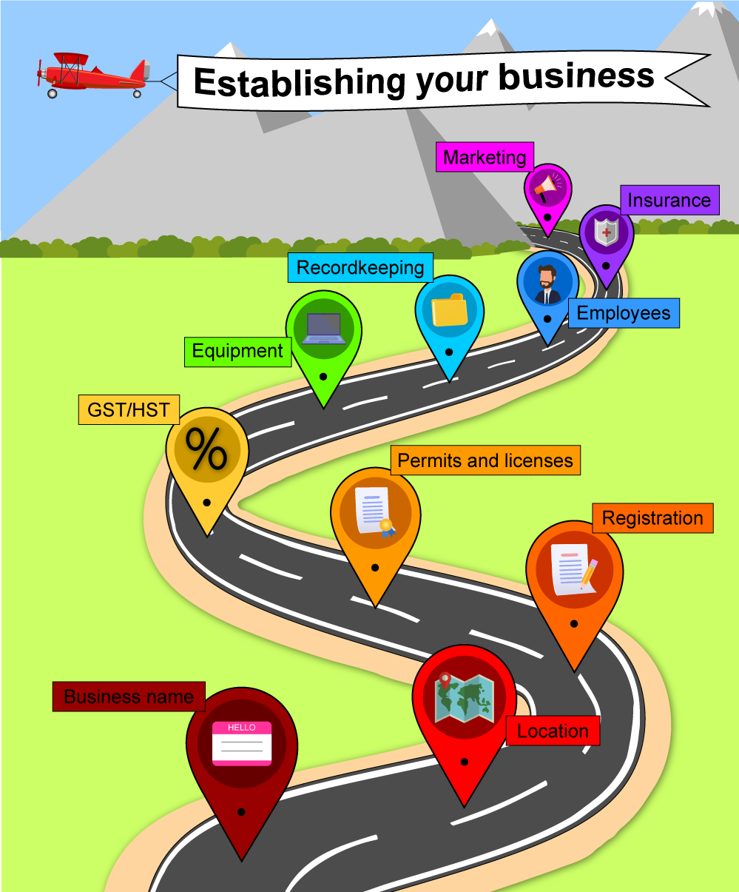

Module 5 - Opening and Running an Immigration Practice
Notes
Tutorial notes
- Thursday 4:00pm.
Introduction
- Business Development Bank of Canada, ‘How to write an effective business plan’ (2025), online
- BPlans, ‘How to Write a Business Plan for a Small Business’ (2024), online
- A PEST (Political, Economic, Social, and Technological) analysis looks at external factors that might impact your business. These are typically factors that you have no control over; however, conducting an analysis of these factors allows you to be prepared and helps you to plan for how you might respond to potential impacts. Sometimes PEST is extended to PESTLE, which includes Legal and Environmental factors. Since your immigration business is likely to be influenced by changes in legislation, adding the extra components in a PESTLE analysis may be worthwhile.
- A SWOT (Strengths, Weaknesses, Opportunities, and Threats) analysis is a useful exercise as you’re starting your practice, and it helps you examine both internal and external factors that might affect your business. Your strength might be that you are strongly connected in a community that is immigration-oriented, whereas your weakness might be that you only feel comfortable doing refugee cases and not all refugees are in a position to pay you for helping them. An opportunity might be that the government suddenly opens up a new program that will benefit your practice, and a threat might be that a certain PNP suspends a program you rely on for an unspecified amount of time.
- When writing your business plan, be sure to include the following:
- Executive summary
- Business overview (including a brief market analysis)
- Sales and marketing plan
- Operating plan
- Human resources plan, if applicable
- Financial plan
- Action plan for the first 2–3 years
- Appendix (e.g., supplemental information, facts and figures, licenses, permits, logos or trademarks, agreements or contracts, credit history, contact details for business advisors)

Client File Management
- The client file (physical or electronic) must contain the following:
- A copy of the service agreement and any other associated agreements
- Original or copies of documents for the application: police certificates, education credentials, transcripts, etc.
- Client property
- Copies of any correspondence
- Invoices and other billing documents
- Draft documents
- Copies of submissions
- Although not required by the Client File Management Regulation, it is highly recommended that all your client files contain a detailed “file opening memo.” This memo can include a summary of the client’s application, important notations on admissibility concerns, and reminders on deadlines.
- Closed files must be retained in a secure and accessible location for at least six years after closing the file.
- Several immigration software tools are available to help you manage your client files. Consider one of the following programs for your immigration practice:
- Clio by Themis Solutions Inc.
- CaseEasy by CaseEasy.ca
- Officio by Uniques Software Corp.
- RCIC Suite
- INSZoom Global
- Each month, you must reconcile your transactions so that they match your bank account statements. You do not necessarily need an accountant to reconcile your statements, but you must get into the habit of entering all of the day’s business transactions each day. With thousands of such transactions per year, we strongly advise you to invest in accounting or bookkeeping software.
- Following are some programs that are commonly used in immigration practices:
- Wave by Wave Financial Inc.
- Xero by Xero Limited
- Sage One by Sage Group
- Zoho Books by Zoho Corporation Pvt. Ltd.
- At the minimum, you will need two bank accounts under your company’s name. The first will be your operating account, and the second will be your client account (some people erroneously refer to this as a "trust" account).
- Follow these steps to accurately start the reconciliation process:
- Start your adjustments with the ending balance shown on your bank statement.
- Add the balance of uncleared deposits to your starting balance. These outstanding cheques are money you have received and accounted for but does not show in your bank balance yet.
- Deduct the balance of outstanding cheques that have not cleared yet from your account. In your records, you have already recorded that you have made payments. Since the cheques have not been cashed yet, you need to subtract them from your bank balance to make that amount match your financial records.
- Check for errors on the part of your bank. If you notice incorrect deposits or typos, alert your bank to perform the proper adjustments.
- Aside from restricting the use of contingency billing, the regulator does not restrict what type of billing schedule you should employ, or your fees. Typically, there are two types of billing methods: flat fee billing by milestones or based on a predetermined schedule and hourly billing.
Quizzes
Knowledge Check 5.1: Opening and Running an Immigration Practice
-
Which of the following is not typically included as a section in a business plan?
- SWOT Analysis (Strengths, Weaknesses, Opportunities, Threats)
- Productivity Plan
- Financial Plan
- Marketing Plan
A Productivity Plan is not typically part of a business plan. Business plans generally include sections like a marketing plan, financial projections, and a business overview (which may contain a SWOT analysis). While productivity strategies are important for running your business, they are usually addressed through internal workflows or time management tools—not formalized in the business plan itself.
-
Which of the following would most likely be considered a threat in a SWOT analysis for your new immigration consulting practice?
- The nearby presence of an ineffective competitor
- Your office's distance from public transportation
- Changes in immigration policy
- Your lack of marketing expertise
-
RCIC Mira has been using the phrase “Certified Immigration Specialist” on her business card and website for several months, despite receiving a written warning from the College advising her to stop. Thirty-five days have passed, and Mira has not corrected the issue or responded to the Registrar. According to the Use of Designations Regulation, what consequence could she now face?
- A suspension of her license and possible revocation
- A second written warning with an additional 30-day grace period
- A formal mediation session with the Registrar to resolve the issue
- A one-time fine of $100 and no further action
-
Estee is a licensed immigration lawyer in New York and an RCIC in good standing. She runs a small practice in Fort Erie, Ontario but resides in Buffalo, NY. In her professional communications, she refers to herself as “Attorney at Law in the State of New York” but chooses not to include her RCIC designation, as most of her clients are based in the U.S. and she believes they may not recognize the RCIC title. Under the Use of Designations Regulation, Estee is permitted to omit the RCIC designation as long as she includes her U.S. legal title and jurisdiction.
- True
- False
According to Section 3.3 of the Use of Designations Regulation, every RCIC in good standing must use the title "Regulated Canadian Immigration Consultant" or "RCIC" in professional contexts. While Section 3.9 allows RCICs to use a foreign designation such as "Attorney at Law (New York)", this does not replace the requirement to include their RCIC designation. Estee must use both—her foreign legal title with jurisdiction and her RCIC designation—regardless of where her clients are based.
-
Raymond holds Client Accounts at several major financial institutions, for the convenience of allowing his clients to transfer funds into his Client Account without incurring extra charges or deposit delays. Last week, he advised his client Alli that her translated documents will be completed at the end of that week, and the total bill will be $500 CDN. He asks Alli to transfer this amount into his Client Account so that he could use it to pay the translation agency. Alli does so the following day, and Raymond's assistant proceeds to withdraw $500 cash from the Client Account that afternoon. Raymond has breached one or more articles in the Client Account Regulation by allowing a cash withdrawal from his Client Account.
- True
- False
According to Section 6.4(a) of the Client Account Regulation, money may only be withdrawn from a Client Account by cheque or electronic transfer to an approved party - such as the government, the Licensee's business account (after invoicing), or another authorized trust account. Cash withdrawals are not permitted under any circumstances. Even if the funds are used for a valid client expense, withdrawing cash from a Client Account is a clear breach of the regulation.
-
Sachiyo has just started her immigration consulting practice. She has retained a bookkeeper, Momoko, to help her manage some of the financial aspects of her practice. Sachiyo authorizes Momoko to have access to her Client Account, Business Account, and provides receipts and invoices each time a transaction is completed with a client. Momoko asks Sachiyo to confirm the deadline before which Client Account reconciliation must be completed?
- No later than 30 days after each month's end
- No later than 60 days after each month's end
- No later than 90 days after each month's end
- No later than 120 days after each month's end
-
Which of the following statements is false about operating a home-based immigration practice?
- A dedicated and private space is recommended for hosting virtual client meetings.
- You can federally incorporate your business.
- You are exempt from paying property taxes.
- You may be required to obtain a business license depending on your municipality.
-
New RCIC Allan lives in Banff, AB. He has already secured a large client base, most of whom reside in Calgary, AB, which is a 90 minute-drive away. Allan's partner will work with him as his assistant. Allan estimates that he will likely spend about 20 hours per week meeting with clients. How should Allan best set up his office to service his clients?
- Maintain a home office and set up a virtual meeting space to host client meetings.
- Maintain a home office, set up a virtual meeting space to host client meetings, and lease a serviced office in Calgary for his partner to have a dedicated space to work.
- Lease a professional office in the city to meet his clients and for his partner to have a dedicated space to work.
- Maintain a home office to work on client files and lease a serviced office in Calgary to meet his clients.
-
RCIC Hana recently received her licence and continues working full-time as a Case Processing Specialist at an immigration consulting firm. The firm is owned by another RCIC and is in good standing with the College. Hana does not advertise her own services or accept clients independently. The firm would like to list Hana’s name on their website and involve her in client consultations. What must Hana do to remain compliant with the Business and Business Name Registration Regulation?
- Register her own business name with the College and operate as a subcontractor to the firm
- Submit a letter of employment to the College confirming her role and responsibilities at the firm
- Obtain written permission from the Registrar to be listed on the firm's website as a licensed RCIC
- Incorporate a professional corporation before offering regulated services at the firm
-
An immigration consulting firm’s financial transactions include payments such as advertising fees, staff wages, and translation service fees paid directly by clients to third-party providers.
- True
- False
While translation services may be part of the overall client process, if the client pays the third-party provider directly, those payments are not recorded as financial transactions of the immigration consulting firm.
-
After determining your model of practice and scope of services, what is the first research step you should take when developing your business plan?
- Rent a serviced office to meet clients
- Research your target city
- Speak to a financial advisor
- Conduct a competitor analysis
Pre-tutorial Knowledge Check: Client File Management
-
RCIC Rashan's immigration practice has been suffering financially from a large number of unpaid invoices, and fines levied on him by the regulator. His own personal finances are also suffering as a result. He has, therefore, made the difficult decision to file for bankruptcy. Rashan duly notified the regulator that he has become bankrupt. However, Rashan hopes to continue practising as an RCIC and does not wish to close his practice. Can Rashan continue to practice independently?
- No, because he can no longer hold a client account.
- Yes, as long as he uses another RCIC's client account.
- No, he must become an employee of another RCIC.
- Yes, as long as he fulfills all other obligations to the regulator as a member in good standing.
-
Aakesh is a successful RCIC who managed two offices in Montreal, QC. In March 2020, he decided to close his Canadian offices and return to India, to look after his parents during the COVID-19 pandemic. Fortunately, just before leaving Canada, Aakesh's remaining two clients' applications were approved by IRCC. Aakesh arranged for the client to receive all of their original documents, as well as a full copy of the application that was submitted on their behalf. Can Aakesh proceed with destroying the rest of the client file and records before he leaves Canada?
- No, he must retain those files for a minimum of three years.
- No, he must retain those files for a minimum of six years.
- No, he must retain those files for a minimum of nine years.
- Yes, as long as he maintains an electronic copy on a cloud server for a minimum of five years.
-
Lucinda has managed her immigration practice for over ten years. Seven years ago, she was diagnosed with ovarian cancer. She underwent a successful surgery, and she responded well to chemotherapy. After being in remission for over three years, Lucinda has decided to close her practice to travel the world with her partner. She has not accepted a new client since she became sick, so most of her client files are ready to be destroyed. Which of the following can Lucinda exclude from her records prior to destroying these files?
- Her client's name and address.
- The file opening date.
- The file closing date.
- A brief description of the services provided.
-
Soon-Yi and Sung-Ho attended high school together and are good friends. Later, they both enrolled in the GDipICL at Queen's University. They both passed the Entry to Practice Exam, and they have agreed to start a practice together. Sung-Ho has found them a beautiful office in downtown Edmonton. The rent is very cheap, because the space is quite small, and it is located in a heritage building. Both Soon-Yi and Sung-Ho have their own offices, and they set aside a third room to use as a conference room. They intend to use the fourth, smallest room in the office, as a file storage room. Having carefully reviewed the Client File Management Regulation, they are confident that they can store both active and closed client files in the same room. Soon-Yi and Sung-Ho are correct in their interpretation of the Client File Management Regulation.
- True
- False
Active and closed client files must be stored separately, but it is not required to store them in completely separate rooms.
-
Amisha is a successful RCIC who managed two offices in Toronto, ON. In January 2020, she decided to close her Canadian offices and return to India to look after her parents during the COVID-19 pandemic. Prior to this decision, Amisha had been managing her client information and records using many different excel spreadsheets. She now wishes to transition to a more streamlined process, managed through specialty software. What are some client management software tools that Amisha can consider? (Select all that apply)
- CLIO
- Quickbooks
- Mogo
- Sage
- CaseEasy
- Officio
- IMMeFile
- Solutionreach
-
In "8 steps for planning your emergency and disaster plan," how should "essential services" be defined in an immigration consulting practice?
- Services that must be performed to satisfy regulatory requirements.
- Services that must be performed to ensure the expediency of your processing standard.
- Services that must be performed to allow you and your staff to travel to work safely and securely.
- Services that impact the availability of amenities you offer to your clients when they visit your office.
-
Soon-Yi and Sung-Ho started an immigration practice together. They have many years of experience in Study Permit applications, so they often offer co-counselling opportunities to help fellow new RCICs who are struggling with more complicated applications. Last week, Sung-Ho agrees to assist Chenna, a new RCIC, on an application for a Study Permit. Sung-Ho asks Chenna to provide the client's personal details, but Chenna tells Sung-Ho that he is not technically co-counselling on the application, since Chenna only needs answers for some of her more complicated questions. Thus, according to the Client File Management Regulation, Sung-Ho does not need to maintain client records on this file.
- True
- False
-
Kamran has been practising for several years. He has received a consultation request from Toshio. During the consultation, Kamran provides Toshio with a breakdown of his professional fees and government processing fees. Toshio agrees and signs a retainer agreement with Kamran. A few weeks later, Toshio tells Kamran that he has inquired with several other RCICs, all of whom charge much lower fees than Kamran does. Toshio believes that Kamran is not acting in good faith in accordance with the Code of Professional Ethics or with the Client Account Regulation. Is Toshio's assertion true or false?
- True
- False
The regulator currently does not restrict limitations or caps on retainer fees; that is, RCICs may choose to set their own fees for their scope of services as they see fit.
-
RCIC Sara's immigration practice has been suffering financially from a large number of unpaid invoices, and fines levied on her by the regulator. Sara has thus decided to sell her practice. Based on the information provided in "How to Exit Your Business: Your Legal Requirements," what information does Sara need to compile to start the sale process? (Select all that apply)
- Client testimonials from the last three years.
- Employee T4s showing how much payroll expenses were for the last three years.
- Tax returns and financial statements for the last three years.
- Utility bills showing the cost of overhead.
- Client lists, with personal information appropriately redacted.
- Outstanding loans with balance and payment schedule.
-
Wilson, a RCIC based in Saskatoon, had been working at his professional office for many years. Sadly, his office building burned down in a fire last month. Luckily, Wilson was able to save most of his active client files when he evacuated from the building, and his other client files were all backed up on a cloud server. Since the fire, Wilson has been working from home and holding client meetings over Zoom. He does not have a dedicated office in his home, so he works at his family's dining table and keeps his client files locked in the guest bedroom closet when he is not working on them. Wilson has breached one or more articles in the Client File Management Regulation.
- True
- False
Although he locks his client files when he is not working, Wilson works in a public area in his family home, where his family could have access to his clients' files while he is working on them. This is a breach of his client's confidentiality under Article 11 of the Client File Management Regulation.